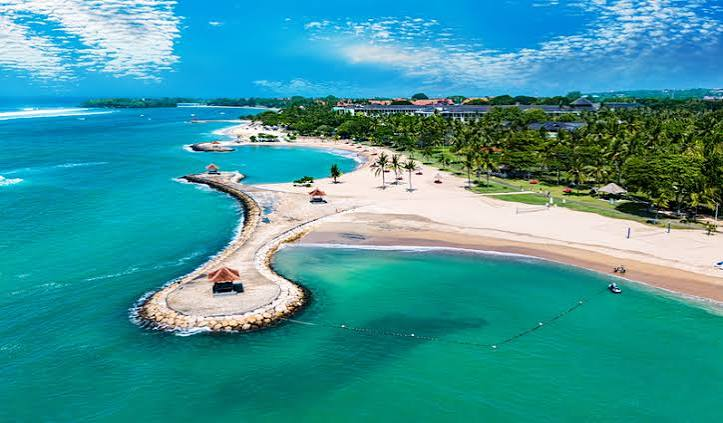

Bali
Bali is an Indonesian island renowned for its forested volcanic mountains, typical rice paddies, and coral reef. Sacred sites such as the Uluwatu Temple, which stands atop a cliff, are found here. To the south, the seaside town of Kuta offers lively bars, while Seminyak, Sanur and Nusa Dua are popular locations. The island is also known for its yoga and meditation centers.